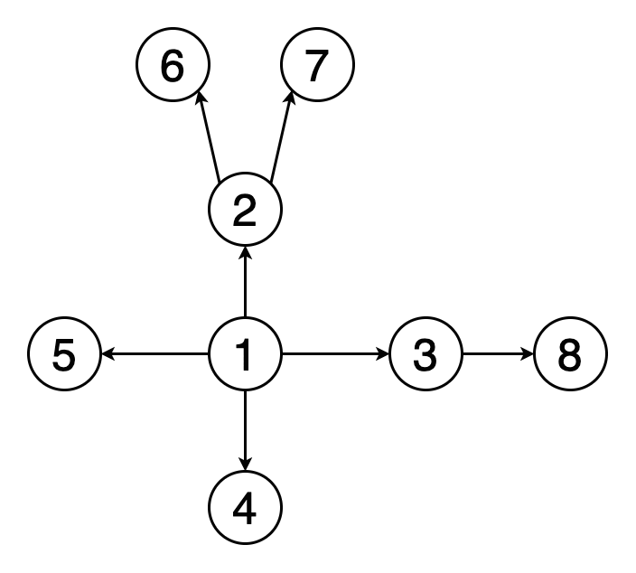
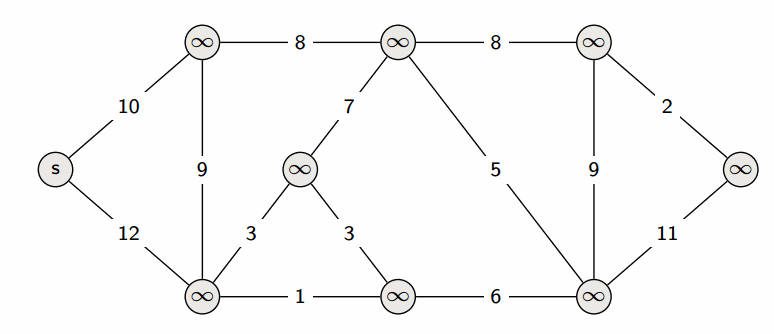
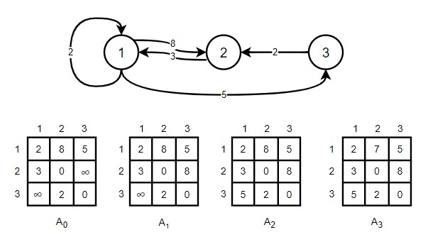
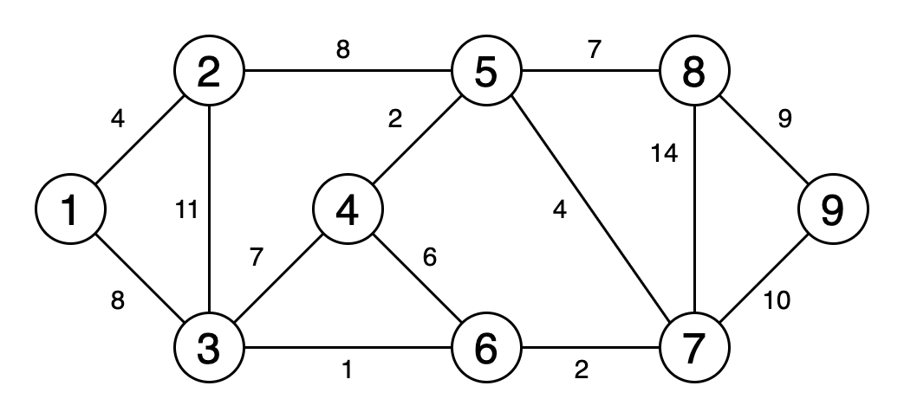

Поиск в ширину
Поиск в ширину — один из основных алгоритмов на графах, который позволяет найти кратчайшие пути
от заданной вершины. Данный алгоритм используется, например, при индексации веб-страниц поисковыми
ботами или при поиске в социальных сетях.
Временная сложность алгоритма: O(n + m), где n – число вершин, m – число рёбер
Временная сложность алгоритма: O(n + m), где n – число вершин, m – число рёбер
Основная идея
Идею алгоритма можно понимать, как процесс «поджигания» графа. На нулевом шаге мы
«поджигаем» стартовую вершину, а на каждом последующем огонь с уже горящей вершины переходит
на смежные с ней, т.е. на каждый шаг алгоритма происходит расширение огня. Номер вершины, на
которой она начинает гореть, равен длине её минимального пути от стартовой вершины
Реализация алгоритма
- На вход подаётся граф и стартовая вершина
- Создаётся очередь, в которую будут помещаться пройденные вершины, а также массив visited, в котором будут храниться пройденные вершины
- В очередь помещается стартовая вершина и помечается в массиве visited как пройденная
- Пока очередь не пуста, достаём из её головы одну вершину, просматриваем все смежные с ней, и добавляем в конец очереди те, которые ещё не пройдены
Когда очередь будет пуста, все достижимые вершины из
стартовой будут пройдены. Чтобы посчитать длины кратчайших путей,
нужно завести массив длины путей и при добавлении в очередь вершины рассчитывать её длину
как du = dv + 1, где u – это вершина, на которой мы находимся,
а v её родитель. Также можно хранить массив предков, в которой для каждой вершины хранится
номер вершины, из которой мы в неё попали.

Поиск в глубину
Поиск в глубину — это рекурсивный алгоритм обхода графа. Он применяется, например, для нахождения
пути между двумя вершинами, для обнаружения циклов на графе, в топологической сортировке.
Временная сложность алгоритма: O(n + m), где n – число вершин, m – число рёбер
Временная сложность алгоритма: O(n + m), где n – число вершин, m – число рёбер
Основная идея
Основная идея поиска следует из названия, она состоит в
том, чтобы идти максимально «вглубь» графа, пока это возможно. Можно провести параллель с лабиринтом,
если мы хотим исследовать весь лабиринт, то нам нужно выбрать смежную вершину, обойти весь путь,
вернуться в исходную точку и повторять, пока не пройдём оставшиеся вершины
Реализация алгоритма
- На вход подаётся граф и стартовая вершина
- Создаётся массив visited, в котором будут храниться пройденные вершины, и массив предков.
- Помечаем стартовую вершину как просмотренную и начинаем обход смежных с ней вершин, при этом, если вершина ещё не помечена как пройденная, то вызываем поиск в глубину для этой вершины.
Алгоритм Дейкстры
Алгоритм Дейкстры – это алгоритм, который позволяет находить кратчайший путь от
заданной вершины до всех остальных в графе без ребер отрицательного веса. Кратчайший путь – это путь,
при котором сумма весов рёбер должны быть минимальна. Алгоритмы нахождения кратчайшего пути применяются,
например, в сервисах для прокладки маршрута, в сетях для решения проблемы минимальной задержки пути.
Временная сложность алгоритма зависит от реализации, при простой реализации алгоритм работает за O(n2 + m). Используя двоичную кучу можно ускорить время работы алгоритма до O(m logn).Самая быстрая реализация работает с использованием фибоначчиевой кучи, время работы выполнение алгоритма займёт O(n logn + m).
Временная сложность алгоритма зависит от реализации, при простой реализации алгоритм работает за O(n2 + m). Используя двоичную кучу можно ускорить время работы алгоритма до O(m logn).Самая быстрая реализация работает с использованием фибоначчиевой кучи, время работы выполнение алгоритма займёт O(n logn + m).
Основная идея
Основная идея заключается в том, что на каждом шаге мы
пытаемся уменьшить кратчайшее
расстояние до нерассмотренных вершин, т.е. производим релаксацию – просматриваем все
рёбра, исходящие из вершины, и для каждой такой смежной вершины алгоритм пытается улучшить расстояние
таким образом: distance[u] = min(distance[u], distance[v] + length), где v – вершина, из которой
производим релаксацию, u – смежная вершина, а length – длина ребра {u, v}.
Простейшая реализация алгоритма
- На вход подаётся граф и стартовая вершина.
- Создаём массив расстояний distance, в котором для каждой вершины будем хранить текущую длину кратчайшего пути из стартовой вершины. Для стартовой вершины distance = 0, для остальных Infinity. Также создаём массив visited для хранения помеченных вершин.
- Из текущей вершины производим релаксацию.
- Выбираем следующую вершину с наименьшим расстоянием и возвращаемся к пункту 3
После n итераций, где n – количество вершин, алгоритм
завершит свою
работу.

Алгоритм Беллмана-Форда
Алгоритм Беллмана-Форда – это алгоритм, который позволяет найти кратчайший путь
из одной вершины графа до всех остальных. Он отличатся от алгоритма Дейкстры тем, что может также
работать с отрицательными весами. Также этот алгоритм позволяет определить наличие циклов отрицательного
веса.
Временная сложность алгоритма: O(n3), где n – число вершин
Временная сложность алгоритма: O(n3), где n – число вершин
Реализация алгоритма

Идея алгоритма не отличается от алгоритма Дейкстры, но для
реализации удобнее представлять граф в виде списка всех рёбер.
- На вход подаётся граф и стартовая вершина.
- Создаём массив расстояний distance, в котором для каждой вершины будем хранить текущую длину кратчайшего пути из стартовой вершины. Для стартовой вершины distance = 0, для остальных Infinity.
- Проходимся по всему списку рёбер и если distance[vertex] < Infinity производим релаксацию.
- Повторяем шаг 2 n-1 раз, где n – количество вершин. После i-й итерации этого шага вычисляются кратчайшие пути длиной не более i ребер. В любом простом пути может быть максимум n-1 ребер, поэтому данный щаг выполняется именно n-1 раз.
Для определения цикла отрицательного веса после n-1 шага можно
выполним ещё один, и если на нём произойдёт хотя бы одна релаксация, то граф содержит цикл отрицательного
веса, в противном случае, такого цикла нет.
Алгоритм Флойда-Уоршелла
Алгорити Флойда-Уоршелла – это алгоритм, который позволяет найти кратчайшее расстояние между
всеми вершинами взвешенного графа. Данный алгоритм может быть применён, например, для компьютерной сети, если
требуется узнать время прохождения пакета от каждого компьютера ко всем остальным.
Временная сложность алгоритма: O(n3), где n – число вершин.
Временная сложность алгоритма: O(n3), где n – число вершин.
Основная идея
Идея заключается в разбиении процесса поиска путей на фазы.
Перед k-ой фазой величина distance[i][j] равна длине
кратчайшего пути из вершины i в вершину j, если этому пути разрешается заходить только в
вершины с номерами меньшими k. Для первой фазы в матрицу расстояний записывается матрица смежности графа,
при этом если между вершинами нет ребра, то в ячейку матрицы записывается Infinity. Когда мы находимся на
k-ой фазе, и хотим пересчитать матрицу расстояний у нас возникает два случая:
- Кратчайший путь из вершины i в вершину j, которому разрешено дополнительно проходить через вершины {1, …, k}, совпадает с кратчайшим путём, которому разрешено проходить через вершины множества {1, …, k - 1}, в этом случае distance[i][j] не изменится;
- «Новый» путь стал лучше предыдущего, т.е. мы нашли такие вершины, что distance[i][k] + distance[k][j] < distance[i][j];
Если мы объединим эти условия, то получится, что кратчайший
путь можно найти по формуле
distance[i][j] = min (distance[i][k] + distance[k][j], distance[i][j]).
Для восстановления пути нужно использовать матрицу предков, которая для каждой пары
вершин будет
содержать номер фазы, на которой было получено кратчайшее расстояние между ними.
Реализация алгоритма
- На вход подаётся граф в виде матрицы смежности размером n x n, в котором каждый элемент задаёт длину ребра между соответствующими вершинами, если ребра между вершинами нет, то в ячейку записывается Infinity.
- Создаём цикл фаз и проходимся по нему n раз.
- Внутри цикла проходимся по матрице и вычисляем distance[i][j] = min (distance[i][k] + distance[k][j], distance[i][j]).

Алгоритм Прима
Алгоритм Прима – это алгоритм, который позволяет в неориентированном
графе найти такое поддерево этого графа, которое бы соединяло все его вершины, и при этом обладало
наименьшим возможным весом. Поддерево – это подмножество рёбер графа, соединяющих все вершины, и
из любой вершины до любой другой можно добраться одним простым путём. Такое поддерево называется
минимальным остовом. Данные алгоритм применяется, например, для создания деревьев для распределения
данных в компьютерных сетях, для сегментации изображений, в кластерном анализе.
Время работы алгоритма зависит от реализации, самая тривиальная реализация занимает O(nm), в случае плотных графов – O(n2), в оптимальном случае алгоритм может работать за O(m logn), где n – число вершин, а m – число рёбер, для этого нужно использовать очередь с приоритетом.
Время работы алгоритма зависит от реализации, самая тривиальная реализация занимает O(nm), в случае плотных графов – O(n2), в оптимальном случае алгоритм может работать за O(m logn), где n – число вершин, а m – число рёбер, для этого нужно использовать очередь с приоритетом.
Основная идея
Суть алгоритма состоит в постепенном строительстве
минимального остова, добавление в
него рёбер происходит по одному. Изначально остов состоит из одной вершины, затем выбирается ребро
минимального веса, исходящего из этой вершины и добавляется в минимальный остов, дальше продолжаем
искать минимальное по весу ребро, имеющее один конец в одной из выбранных вершин, а другой в
ещё невыбранных. Процесс повторяется пока остов не будет содержать все вершины.
Реализация алгоритма
- На вход подаётся граф в виде матрицы смежности размером n x n, в котором каждый элемент задаёт длину ребра между соответствующими вершинами, если ребра между вершинами нет, то в ячейку записывается Infinity.
- Создаем массив visited, в котором будут храниться вершины, включенные в остов, массив minEdge, в котором будет храниться вес наименьшего допустимого ребра из вершины i, и массив selectedEdge, который содержит конец этого наименьшего ребра.
- Выбираем любую вершину vertex, из которой будем строить остов, и полагаем minEdge[vertex] = 0
- Создаём цикл длинной n-1
- Внутри цикла выбираем вершину с наименьшей меткой minEdge, кладём ей в visited, и просматривает все рёбра из этой вершины, пересчитывая их метки
